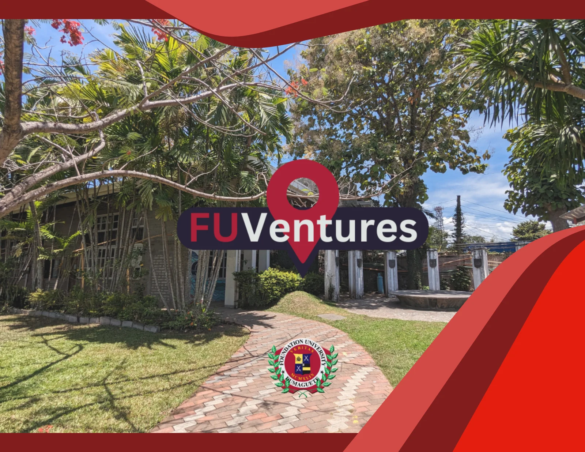
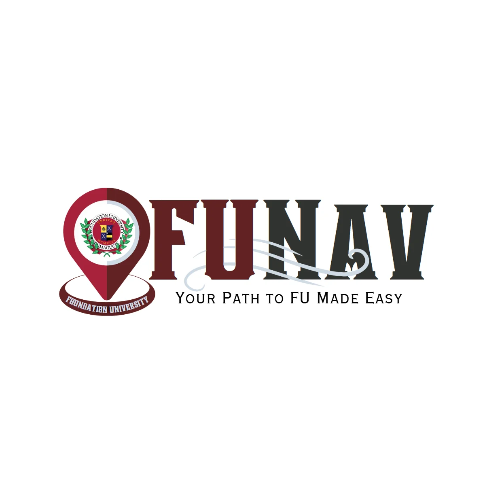
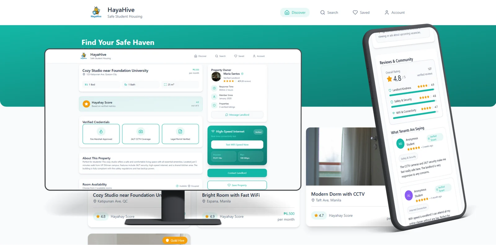

Java · Desktop app01 / 05
Fuventures
Campus exploration, made simple.
Explore the project
I worked with a team on a campus navigation guide for Foundation University. The Java desktop app helps new students locate rooms and facilities.
IT student. Curious builder. Creative thinker.
Hey, I’m Mark Joseph Fernandez. I’m learning, experimenting, and building thoughtful digital experiences at Foundation University.
Java ✳ React ✳ Kotlin ✳ PHP ✳ MySQL ✳ HTML & CSS ✳ JavaScript
01 / Selected work
From finding your way around campus to finding a place to call home. Small ideas, hands-on learning.

Java · Desktop app01 / 05
Campus exploration, made simple.
I worked with a team on a campus navigation guide for Foundation University. The Java desktop app helps new students locate rooms and facilities.

Kotlin / Python · Mobile app02 / 05
A campus guide in your pocket.
I worked with a team on a mobile app connected to the College of Computer Studies website. It brings together an interactive campus map, enrollment guides for transferees, and a directory of university resources.

React · Web & mobile03 / 05
A clearer way to find student housing.
My goal with Hayahive is to help students assess a rental before committing. The system combines physical housing certification with digital information available through web and mobile platforms.
It is designed to give students a clearer view of a property before they decide where to live.
PHP / CodeIgniter · Web app04 / 05
Files and media, brought together.
My Greyhound Hub project focuses on file management and media streaming. The project logo brings these two functions together with folder and play symbols.
HTML / CSS / JavaScript · Portfolio05 / 05
The portfolio you’re exploring right now.
A four-page home for my projects, background, and learning notes. Built with semantic HTML, a shared responsive stylesheet, and lightweight JavaScript.
Flexible grids, accessible navigation, project filters, and motion that respects visitor preferences make it work across screen sizes. The core content remains available with JavaScript turned off.
03 / Programming certificates
My Java (Basic) certificate from HackerRank, alongside spaces for future Python and JavaScript certificates.
Issued by HackerRank to Mark Joseph Fernandez.
Verify certificateCertificate document and issuer details have not been added yet.
Python certificate detailsCertificate document and issuer details have not been added yet.
JavaScript certificate details